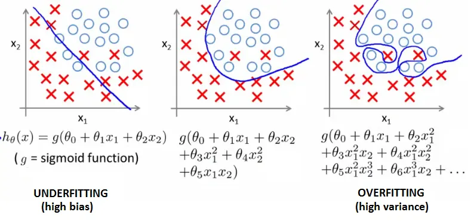
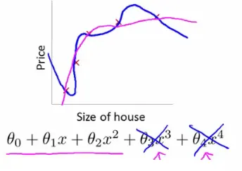
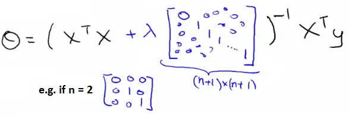

Regularization is a technique used to prevent overfitting in machine learning models, ensuring they perform well not only on the training data but also on new, unseen data.

Regularization works by adding a penalty term to the cost function that penalizes large coefficients, thereby reducing the complexity of the model.
$$ \min \frac{1}{2m} \left[ \sum_{i=1}^{m}(h_{\theta}(x^{(i)}) - y^{(i)})^2 + \lambda \sum_{j=1}^{m} \theta_j^2 \right] $$

The gradient descent algorithm can be adjusted to include the regularization term:
I. For $\theta_0$ (no regularization):
$$ \frac{\partial}{\partial \theta_0} J(\theta) = \frac{1}{m} \sum_{i=1}^{m} (h_{\theta}(x^{(i)}) - y^{(i)})x_0^{(i)} $$
II. For $\theta_j$ ($j \geq 1$):
$$ \frac{\partial}{\partial \theta_j} J(\theta) = \left( \frac{1}{m} \sum_{i=1}^{m} (h_{\theta}(x^{(i)}) - y^{(i)})x_j^{(i)} \right) + \frac{\lambda}{m}\theta_j $$
Regularized linear regression incorporates a regularization term in the cost function and its optimization to control model complexity and prevent overfitting.
To optimize the regularized linear regression model using gradient descent, the algorithm is adjusted as follows:
while not converged:
for j in [0, ..., n]:
θ_j := θ_j - α [ \frac{1}{m} \sum_{i=1}^{m}(h_{θ}(x^{(i)}) + y^{(i)})x_j^{(i)} + \frac{λ}{m} θ_j ]Here is the Python code to demonstrate regularization in linear regression, including the regularized cost function and gradient descent with regularization. This example uses numpy to implement the regularized linear regression model:
import numpy as np
def hypothesis(X, theta):
return np.dot(X, theta)
def compute_cost(X, y, theta, lambda_reg):
m = len(y)
h = hypothesis(X, theta)
cost = (1 / (2 * m)) * (np.sum((h - y) ** 2) + lambda_reg * np.sum(theta[1:] ** 2))
return cost
def gradient_descent(X, y, theta, alpha, lambda_reg, num_iters):
m = len(y)
cost_history = np.zeros(num_iters)
for iter in range(num_iters):
h = hypothesis(X, theta)
theta[0] = theta[0] - alpha * (1 / m) * np.sum((h - y) * X[:, 0])
for j in range(1, len(theta)):
theta[j] = theta[j] - alpha * ((1 / m) * np.sum((h - y) * X[:, j]) + (lambda_reg / m) * theta[j])
cost_history[iter] = compute_cost(X, y, theta, lambda_reg)
return theta, cost_history
# Example usage with mock data
np.random.seed(42)
X = np.random.rand(10, 2) # Feature matrix (10 examples, 2 features)
y = np.random.rand(10) # Target values
# Adding a column of ones to X for the intercept term (theta_0)
X = np.hstack((np.ones((X.shape[0], 1)), X))
# Initial parameters
theta = np.random.randn(X.shape[1])
alpha = 0.01 # Learning rate
lambda_reg = 0.1 # Regularization parameter
num_iters = 1000 # Number of iterations
# Perform gradient descent with regularization
theta, cost_history = gradient_descent(X, y, theta, alpha, lambda_reg, num_iters)
print("Optimized parameters:", theta)
print("Final cost:", cost_history[-1])In the normal equation approach for regularized linear regression, the optimal $θ$ is computed as follows:

The equation includes an additional term $λI$ to the matrix being inverted, ensuring regularization is accounted for in the solution.
Here is the Python code to implement regularized linear regression using the normal equation:
import numpy as np
def regularized_normal_equation(X, y, lambda_reg):
m, n = X.shape
I = np.eye(n)
I[0, 0] = 0 # Do not regularize the bias term (theta_0)
theta = np.linalg.inv(X.T @ X + lambda_reg * I) @ X.T @ y
return theta
# Example usage with mock data
np.random.seed(42)
X = np.random.rand(10, 2) # Feature matrix (10 examples, 2 features)
y = np.random.rand(10) # Target values
# Adding a column of ones to X for the intercept term (theta_0)
X = np.hstack((np.ones((X.shape[0], 1)), X))
# Regularization parameter
lambda_reg = 0.1
# Compute the optimal parameters using the regularized normal equation
theta = regularized_normal_equation(X, y, lambda_reg)
print("Optimized parameters using regularized normal equation:", theta)The cost function for logistic regression with regularization is:
$$ J(θ) = \frac{1}{m} \sum_{i=1}^{m}[-y^{(i)}\log(h_{θ}(x^{(i)})) - (1-y^{(i)})\log(1 - h_{θ}(x^{(i)}))] + \frac{λ}{2m}\sum_{j=1}^{n}θ_j^2 $$
The gradient is defined for each parameter $θ_j$:
I. For $j = 0$ (no regularization on $θ_0$):
$$ \frac{\partial}{\partial θ_0} J(θ) = \frac{1}{m} \sum_{i=1}^{m} (h_{θ}(x^{(i)}) - y^{(i)})x_j^{(i)} $$
II. For $j ≥ 1$ (includes regularization):
$$ \frac{\partial}{\partial θ_j} J(θ) = ( \frac{1}{m} \sum_{i=1}^{m} (h_{θ}(x^{(i)}) - y^{(i)})x_j^{(i)} ) + \frac{λ}{m}θ_j $$
For both linear and logistic regression, the gradient descent algorithm is updated to include regularization:
while not converged:
for j in [0, ..., n]:
θ_j := θ_j - α [ \frac{1}{m} \sum_{i=1}^{m}(h_{θ}(x^{(i)}) + y^{(i)})x_j^{(i)} + \frac{λ}{m} θ_j ]The key difference in logistic regression lies in the hypothesis function $h_{θ}(x)$, which is based on the logistic (sigmoid) function.
Here is the Python code to implement regularized logistic regression using gradient descent:
import numpy as np
from scipy.special import expit # Sigmoid function
def sigmoid(z):
return expit(z)
def compute_cost(X, y, theta, lambda_reg):
m = len(y)
h = sigmoid(np.dot(X, theta))
cost = (1 / m) * np.sum(-y * np.log(h) - (1 - y) * np.log(1 - h)) + (lambda_reg / (2 * m)) * np.sum(theta[1:] ** 2)
return cost
def gradient_descent(X, y, theta, alpha, lambda_reg, num_iters):
m = len(y)
cost_history = np.zeros(num_iters)
for iter in range(num_iters):
h = sigmoid(np.dot(X, theta))
error = h - y
theta[0] = theta[0] - alpha * (1 / m) * np.sum(error * X[:, 0])
for j in range(1, len(theta)):
theta[j] = theta[j] - alpha * ((1 / m) * np.sum(error * X[:, j]) + (lambda_reg / m) * theta[j])
cost_history[iter] = compute_cost(X, y, theta, lambda_reg)
return theta, cost_history
# Example usage with mock data
np.random.seed(42)
X = np.random.rand(10, 2) # Feature matrix (10 examples, 2 features)
y = np.random.randint(0, 2, 10) # Binary target values
# Adding a column of ones to X for the intercept term (theta_0)
X = np.hstack((np.ones((X.shape[0], 1)), X))
# Initial parameters
theta = np.random.randn(X.shape[1])
alpha = 0.01 # Learning rate
lambda_reg = 0.1 # Regularization parameter
num_iters = 1000 # Number of iterations
# Perform gradient descent with regularization
theta, cost_history = gradient_descent(X, y, theta, alpha, lambda_reg, num_iters)
print("Optimized parameters:", theta)
print("Final cost:", cost_history[-1])These notes are based on the free video lectures offered by Stanford University, led by Professor Andrew Ng. These lectures are part of the renowned Machine Learning course available on Coursera. For more information and to access the full course, visit the Coursera course page.